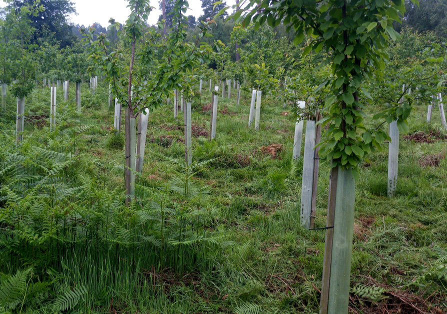
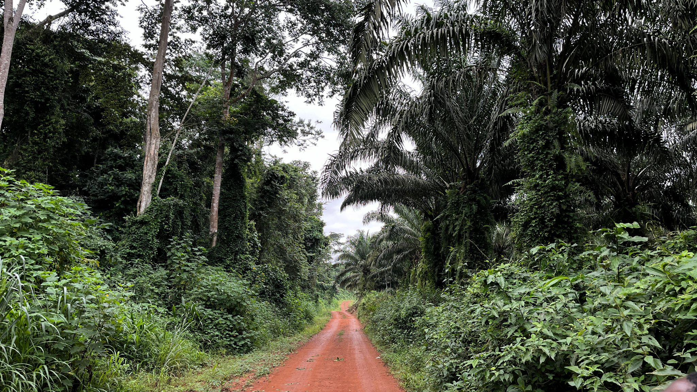
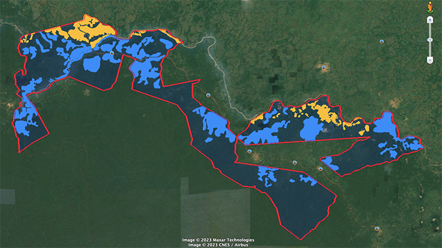
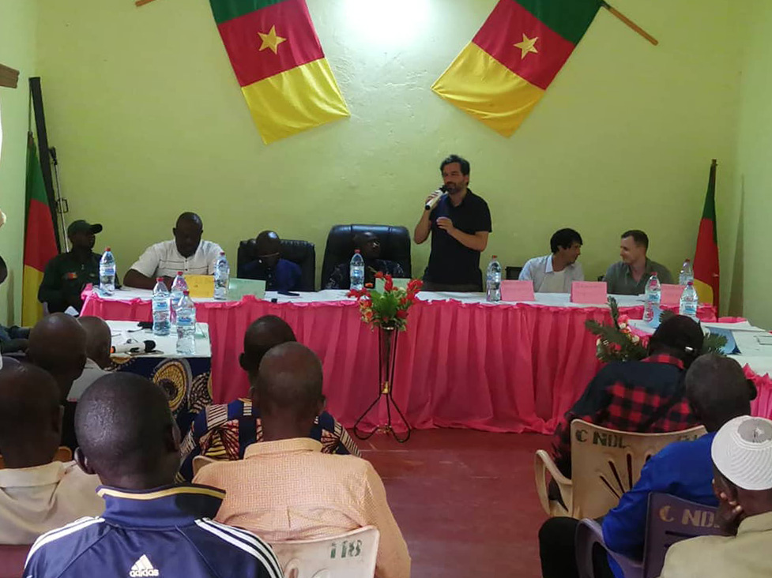
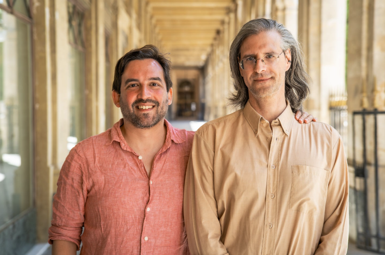

It's a jungle out there.
We can keep it that way.
Iroko Analytics finds and develops the top 1% reforestation sites in sub-Saharan Africa.
We work closely with experienced local partners and national governments to design and implement the highest-impact, lowest-risk carbon-financed projects.
But we don’t just remove significant amounts of carbon through native species reforestation. Carbon finance delivers life-changing community benefits and enables biodiversity restoration, allowing endangered species to return to the forest.
Our mission is simple: By 2030, we will be removing 5,000,000 tonnes of CO2 annually by restoring Africa’s native forests.

The Need for High-Integrity Reforestation
The voluntary carbon market faces a supply crunch. Over 1 billion carbon credits will be needed by 2030, while current supply is only 20% of that. Africa’s immense reforestation potential could meet that demand alone, but less than 1% of available land is being reforested, and the continent only receives 5% of global climate finance. So what is preventing carbon buyers and investors from jumping in?
Net-zero offset customers need to buy carbon credits with confidence, but worry about:
Risky Projects: Is the site designed to succeed, and can it deliver on its promises?
Impactful Credits: Are there measurable benefits that go beyond carbon removal?
- Trustworthy Developers: Can we trust and verify the results for our stakeholders?
Project financiers want to fund scalable reforestation project developers in Africa, but they only see projects that are:
Expensive: Developers must handle all project aspects, instead of focusing on their strengths
Slow: A steep learning curve to meet VCM, customer, and investor standards and expectations
- Unique: For high-integrity projects, biodiversity, and community impacts are context-specific
We put data at the heart of our process, selecting sites with demonstrated legality, security, ecological potential, and community readiness.
We then co-develop these projects with experienced local partners, streamlining the process to rapidly scale access to both project finance and customers. Local partners and communities receive up to 80% of credits.
The result transforms project development from a context-dependent, artisanal effort to a scalable, engineered process, with massive benefits for all stakeholders.


Our flagship project is located in the Ndélélé Communal Forest in south-eastern Cameroon. Along with CTFC, our local partner, we are restoring 5,000 hectares of severely degraded tropical forest.
Ndélélé will:
- Revive and enrich biodiversity by reintroducing 15 native species and restoring the forest to its natural state.
- Remove 3 million tons of CO2 over 30 years
- Create community benefits through reforestation jobs and agroforestry revenue, as well as a portion of carbon credit revenue
- Maintain full financial transparency and undergo quarterly monitoring
We are currently developing several new projects in Kenya and Guinea-Bissau, totalling up to 50,000 hectares.
Working with Iroko Analytics
We combine extensive experience in African conservation with technology and business acumen. As a Techstars portfolio company (Paris, 2022), we are committed to driving innovation in the sector.
Stakeholders working with us benefit in multiple ways:
- Governments can meet their reforestation and climate goals
- Local partners & communities gain access to carbon finance to revolutionize their lives and work
- Customers are reassured that their carbon budgets achieve real, measurable impact
- Project financiers finally have a developer who can scale rapidly and ethically in one of the world’s most desirable frontier markets


Jules Caron (CEO)
With over a decade of experience in CAR, CMR, DRC, and more, Jules has worked on environmental and conservation issues alongside WWF, Global Witness, Oxfam, and others. He holds an MA in Political Philosophy from the University of Geneva.
Misha Lepetic (CTO)
Over 20 years of experience in technology and knowledge management for organizations such as Pfizer, Nielsen, Hachette, Human Rights Watch, and the United Nations. Misha holds an MS in Technology Management from Columbia University.
Jérôme Burnod (CFO)
Head of Artificial Intelligence, Crédit Agricole Assurances. 30+ years in the financial sector including with Crédit Agricole, KPMG, HSBC. MA in Mathematics (University of Paris).
Wendy Gaudencia
(East Africa Director)
BA in Spatial and Environmental Planning and Management, Kenyatta University.
Co-founder, Galeio. Fmr Co-founder & CTO, Geolabe. PhD in Mathematics (Ecole Normale Supérieure).
Alexandre Tuel
(Scientific Advisor)
Co-founder, Galeio. Fmr Head of Atmospheric Research, Geolabe. PhD in Environmental Science (MIT).
DJ (Dheeraj) Harjai
(Advisor and Mentor)
A strategy executive and senior Healthcare Leader with over 15 years of global experience. He is a thought partner/advisor to executives, a senior operator with experience of running innovative businesses, and an advisor/mentor to several next-gen startups.
Brian Binsack
(P)
Building impactful products for mission-driven organizations.
It's a Jungle Out There.
We Can Keep it That Way.
Climate change is here. Carbon-financed reforestation is one of the most effective solutions we have to avoid the worst-case scenario.
We believe that it also offers an unmissable opportunity for Africa, its inhabitants, and its forests and wildlife. Join us.
Contact us